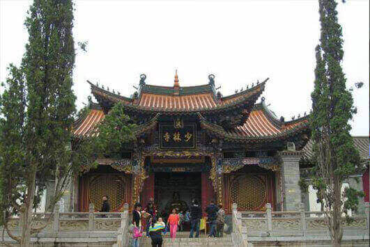
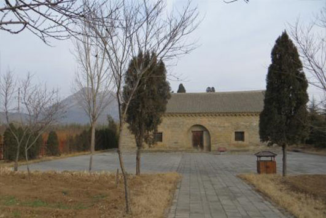
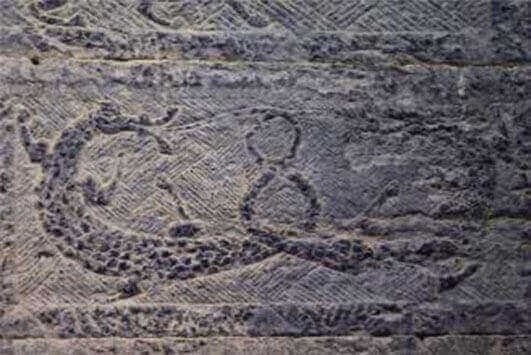
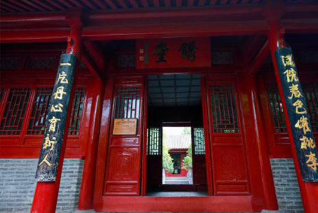
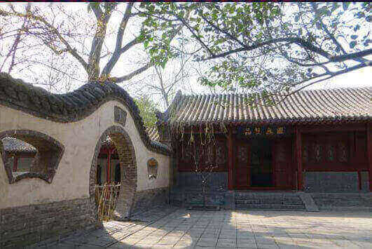
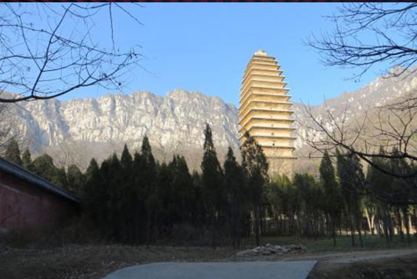
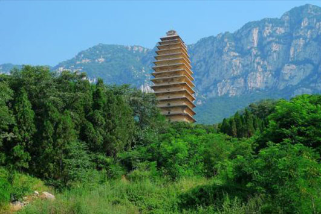

morly旅游网
嵩山，古称“外方”，夏商时称“崇高”、“崇山”，西周时成称为 “岳山”，以嵩山为中央左岱（泰山）右华（华山），定嵩山为中岳，始称“中岳嵩山”。嵩山位于河南省西部，地处登封市西北部，西邻古都洛阳，东临古都郑州，属伏牛山系。嵩山是中华文明的重要发源地，也是中国名胜风景区，被列为世界地质公园，国家AAAAA级旅游景区。坐落在嵩山腹地及周围的天地之中历史建筑群（少林寺（常住院、初祖庵、塔林）、东汉三阙（太室阙、少室阙、启母阙）、中岳庙、嵩岳寺塔、会善寺、嵩阳书院、观星台）被联合国科教文组织列为世界文化遗产。
嵩山历史文化深远，是三教的策源地，对三教的形成和传播起到了极大的作用。这三种文化分别是佛教文化、道教文化、儒学文化。嵩山是佛教名山，佛教文化丰富而灿烂。其中比较著名的寺庙有法王寺和少林寺。法王寺，创建于东汉，是中国最早的佛教寺院之一，据《说嵩》记载，洛阳白马寺原为招待四夷宾客之所，因此可以说法王寺是中国佛寺创建之始。嵩山也是道教名山，嵩山的道教建筑、石阙等有很高的价值。中岳庙中岳大殿增修于宋真大中祥符六年，历代均有重修。面阔九间，进深五间，高大雄伟、十分壮观，是中岳最大的殿宇，也是中原地区最大的古建筑。另有东汉建的太室阙、启母阙、少室阙。其上都雕刻各种图画，或刻记歌功颂德的铭文。嵩山是儒家文化影响很大的地方，在中国国内名山中这种情况比较少见。其中嵩阳书院、崇福宫是宋明理学创始人程颐、程颢等著名儒学大家活动过的地方。与观星台景区有关的周公、隐居于箕山的许由、巢父、伯益，虽然生活年代早在儒学诞生以前，但是都是儒家尊崇的先贤，有关他们的记载和传说，是儒家文化的一部分。所以，就文化内涵而言，儒家文化在嵩山足以和佛教、道教鼎足而立。
嵩山峦重迭起伏，沟壑犬牙交错，山势雄伟、秀拔，林深、谷幽、水碧。嵩山有许多值得一观的景点，有少林寺、太室阙、少室阙、启母阙、中岳庙、嵩岳寺塔、会善寺、嵩阳书院、三皇寨、连天峰、法王寺塔等。少林寺是中国佛教禅宗祖庭和中国功夫的发源地，现为世界文化遗产、全国重点文物保护单位、国家AAAAA级旅游景区，位于河南省郑州市登封市嵩山五乳峰下，因坐落于嵩山腹地少室山茂密丛林之中，故名“少林寺”。少林寺是世界著名的佛教寺院，是汉传佛教的禅宗祖庭，在中国佛教史上占有重要地位，被誉为“天下第一名刹”。因其历代少林武僧潜心研创和不断发展的少林功夫而名扬天下，素有“天下功夫出少林，少林功夫甲天下”之说。少林寺寺内外碑铭繁多，其中元代碑铭不仅数量可观，且大都具有珍贵的文化价值。太室阙，位于河南省登封市嵩山南麓，是汉代太室山庙前的神道阙，与少室阙、启母阙并称中岳汉三阙。太室阙分东西两阙，用青石垒砌，阙身四面用减地平雕的雕刻方法刻出了人物、车马出行、马技、剑舞以及动物等画像五十余幅，再现了汉代贵族的生活场面，为今天的研究提供了很好的实物材料。少室阙，位于河南省郑州市登封市嵩山南麓邢家铺村西，距城六公里少室山下。少室阙保存较为完整，东西两阙的结构基本相同，两阙一南一北，相互对峙，阙壁的四周遍饰用减地平雕刻法雕成的彩画，共计有六十余幅，这些画的主要内容包括车马出行、马戏、驯象、月宫以及动物图案等，其中的马戏图雕刻有两匹骏马，骏马腾空飞驰，前一匹马鞍上有一名挽双丫髻的少女，穿着紧身衣裤，倒立在马背上，后一匹马上有一女子舒展长袖随风飘扬，人体自然后倾，这些表现手法充分地显示出了奔马飞奔时的情形和马戏的惊险技艺。嵩阳书院是中国古代著名的高等学府，中国古代四大书院之一，世界文化遗产天地之中历史建筑群组成部分，全国重点文物保护单位，位于河南省郑州市登封市嵩山南麓。嵩阳书院在历史上曾是佛教、道教场所，但时间最长最有名气的是作为儒教圣地。书院嵩高景最清，石幢犹记故宫名。山色溪声留宿雨，菊香竹韵喜新晴。初来岂得无言别，汉柏阴中句偶成。河南登封法王寺塔是中国最早的佛寺之一，法王寺塔约建于唐代盛期即公元八世纪前半叶，是唐代甚至中国最优美的古塔，现为全国重点文物保护单位。法王寺塔的轮廓线中部微微臌出，上下收小，上部收小更多，整体呈梭形，檐端连成极柔和的弧线，体现了唐代艺术家高度的审美能力。法王寺环境幽美，风景如画，登封八大景之一的“嵩门待月”就在这里，人称嵩山八景之首。宋代楼异吟《玉柱峰》曰：”环天下皆山，惟嵩高当天地之中；占名山皆寺，惟法王据形势之最佳。”古人称颂法王寺为“嵩山第一胜地”。
怎么样，有没有被嵩山的景色及历史古迹所吸引？在空闲时刻，快去嵩山的山间走一走、看一看，去感受嵩山之美。
门票信息
通票：嵩阳景区门票80元，中岳景区门票80元。媚游中原价格70元。
套票：少林景区+中岳景区或少林景区+嵩阳景区套票180元，媚游中原套票160元。
少林景区+中岳景区+嵩阳景区套票260元，媚游中原套票220元。
少林寺
少林寺是中国佛教禅宗祖庭和中国功夫的发源地，位于河南省郑州市登封市嵩山五乳峰下，被誉为“天下第一名刹”。
太室阙
太室阙位于河南省登封市嵩山南麓，是天地之中历史建筑群国家文物之一，是研究历史的重要材料。
 嵩阳书院
嵩阳书院位于河南省郑州市登封市嵩山南麓，历史上嵩阳书院以理学著称于世，以文化赡富，文物奇特名扬古今。
 法王寺塔
法王寺塔位于登封市区西北5公里太室山南麓玉柱峰下。法王寺塔的轮廓线中部微微臌出，上下收小，上部收小更多，整体呈梭形，檐端连成极柔和的弧线，体现了唐代艺术家高度的审美能力。
 内容整理至网络，如有侵权，请联系我们！1255394075@qq.com